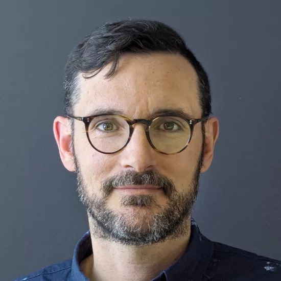

About FacialPalsyPath
Why create FacialPalsyPath?
FacialPalsyPath is an online hub for learning about facial paralysis geared towards people with a recent diagnosis or their loved ones.
Facial paralysis is a daunting diagnosis, and important to showcase. It is important for us to share how intimidating it can feel to have your face,
a pivotal part of your identity, change so drastically, and also share that those feelings are completely normal.
In order to provide a person-first resource, we developed FacialPalsyPath to act as a source of clear, accessible, and accurate health information by
providing clear learning points on anatomy, facial paralysis, clinical visits, and treatment options.
Key Learning Objectives:
- To create a person-first resource that addresses frequently asked questions highlighted during shadowing sessions at the Facial Paralysis and Facial Nerve Dysfunction Clinic at UHN.
- To leverage visuals to increase engagement and information accessibility for learning about facial paralysis.
- To provide a resource that illustrates real examples of facial paralysis in order to destigmatize it and help people see themselves represented.
FacialPalsyPath was created as a Master’s Research Project for the professional Master’s course Biomedical Communication at the University of Toronto. This project was developed in collaboration with Dr. Kevin Zuo at Toronto Western Hospital (UHN) for the Facial Paralysis and Facial Nerve Dysfunction Clinic.
Visit the Clinic PageAnatomical Posters
Part of the FacialPalsyPath educational project was to create 3 anatomical posters to help visualize the anatomy of the facial nerve, an overview of facial paralysis and different treatment options. These posters are available to download for free below and can be printed for personal use.


All posters are for educational purposes and personal use only. They cannot be sold or distributed without permission.
Meet the Team
Designer & Developer
Ella Eberhardt, DEC, Hons. BSc, MScBMC
Biomedical Communicator
Led the project research, development, design, illustration, and production of FacialPalsyPath.
Visit WebsiteAdvisory Committee
Dr. Shelley Wall
AOCAD, MScBMC, PhD, CMI, FAMI
Faculty Supervisor
Provided guidance on the development, design and supported the person-first approach of the project.
Visit WebsiteDr. Kevin Zuo
MD, MASc, FRCSC
Content Expert
Provided guidance on scientific accuracy for the written content as well as the visuals. Coordinated the research associated with this project.
Visit Website
Michael Corrin
BFA, BA, Hons. BSc, MScBMC, CMI
Second Voting Member
Provided guidance on the development, and deployment of the project.
Visit WebsiteAcknowledgements
This project was done alongside research into how to best create accessible learning material especially as it focuses on medical information. We would like to say thank you to the patients and healthcare providers who participated in the research and provided feedback on the project. We would also like to thank Dr. Kevin Zuo for his guidance and support throughout the project.
Contact Us
Have any questions or feedback about the design or development of FacialPalsyPath?
Feel free to reach out using the contact form below or by emailing ellaeberhar@gmail.com
For medical inquiries, please contact a healthcare provider.
Facial Paralysis and Facial Nerve Dysfunction Clinic
Location
Toronto Western Hospital
190 Elizabeth St, Toronto, ON M5G 1L6
East Wing - 2nd Floor
Contact
Phone: (416) 603-5340
For patient referrals, please fax the surgeon's office directly:
Dr. Heather Baltzer
Referral Fax: (416) 603-5251
Dr. Kevin Zuo
Referral Fax: (416) 603-5392
Hours
Monday - Friday: 7:30 AM - 5:00 PM
Saturday - Sunday: Closed